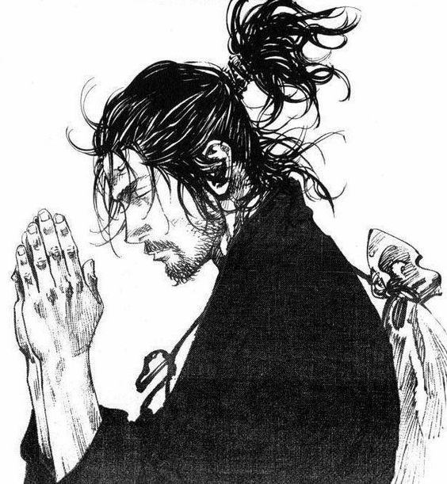

Publicado el 5 de marzo de 2023 por [tu nombre]
Miyamoto Musashi fue un famoso samurái y ronin (samurái sin maestro) japonés del siglo XVII, conocido principalmente por su habilidad como espadachín y por su obra literaria "El libro de los cinco anillos", que es considerado un tratado clásico sobre la estrategia militar y la filosofía samurái. La filosofía de Musashi se centraba en la idea de que el guerrero debía estar siempre preparado para la batalla, tanto física como mentalmente. Para él, la verdadera victoria no era sólo la conquista del enemigo, sino también la conquista de uno mismo y la superación de los propios límites. Creía que el guerrero debía entrenarse constantemente en todas las artes y habilidades necesarias para la lucha, pero también debía cultivar la sabiduría y la compasión, y buscar siempre la armonía y el equilibrio en todas las áreas de la vida. Además de su fama como guerrero y escritor, Musashi es recordado por su estilo de esgrima, conocido como "Niten Ichi-ryū", que se caracterizaba por el uso simultáneo de dos espadas, una larga y otra corta. También se le atribuyen numerosas anécdotas y leyendas que reflejan su habilidad, su astucia y su sabiduría en el campo de batalla.. Otro párrafo del artículo.
